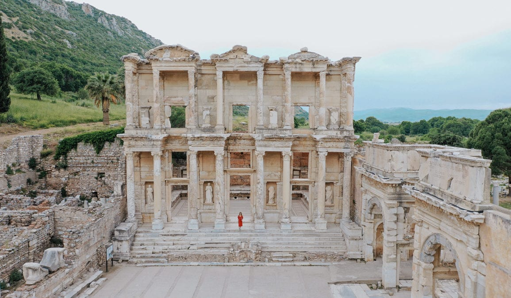

Efes Antik Kenti
Anadolu'nun batı kıyısında, bugünkü İzmir ilinin Selçuk ilçesinin üç kilometre güneybatısında yer alan antik bir Luvi şehriydi. Şehir Anadolu'da Yunan sömürgeciliğinin başlamasıyla birlikte İyonya ve daha sonra Roma dönemlerinde de önemini korumuştur. Kuruluşu Cilalı Taş Devri'ne yani MÖ 6000 yıllarına dayanır. MÖ 10. yüzyılda eski Arzava başkentinin yerine Attik ve İyonyalı Yunan kolonistleri tarafından inşa edilmiştir.
Klasik Yunan döneminde İyonya'nın on iki şehrinden biriydi. Şehir, MÖ 129'da Roma Cumhuriyeti ‘nin kontrolüne geçtikten sonra gelişti.
1994'te UNESCO tarafından Dünya Mirası Geçici Listesi'ne dahil edilen Efes 2015'te ise Dünya Mirası olarak tescil edildi.
Şehir antik Dünyanın Yedi Harikası'ndan biri olan yakındaki Artemis Tapınağı (M.Ö. 550 BC; civarında tamamlandı) ile ünlüdür. Diğer birçok anıtsal yapı arasında Celsus Kütüphanesi ve 25,000 seyirci alabilen II. Claudius zamanında başlanıp,Trajan (M.S..98-117) döneminde tamamlanan antik tiyatro da vardır. Efes, Vahiy Kitabı ‘nda adı geçen Asya'nın yedi kilisesinden biriydi Yuhanna İncili burada yazılmış olabilir.
Şehir 5. yüzyıl birkaç Hristiyan konsilinin yeriydi (bkz. Birinci Efes Konsili). Şehir 263 yılında Gotlar tarafından yıkıldı ve yeniden inşa edilmesine rağmen limanın Küçük Menderes nehri tarafından yavaş yavaş silinmesi nedeniyle şehrin ticaret merkezi olarak önemi azaldı. MS 614'teki bir depremde kısmen tahrip oldu. Efes harabeleri kısmen Adnan Menderes Havalimanı'ndan veya Kuşadası Limanı'ndan yaklaşık 30 km güneyindedir.
2015 yılında UNESCO Dünya Mirası olarak eklendi. 2022 yılındaki kazı çalışmalarında 7. yüzyıla denk gelen Erken Bizans Dönemi'nden kalma dükkânlara ve bir mahalleye ulaşıldı.
